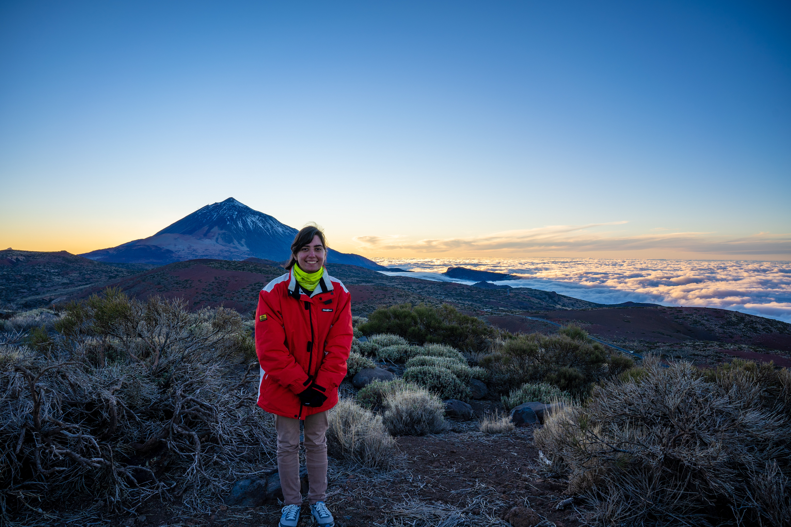

About me
I'm a postdoc researcher in particle physics with an interest in flavour physics and effective theories. I have always been involved in outreach, mentoring, teaching and promoting diversity in STEM.
I come from a small city in the south of Alacant: Crevillent, where I lived all my life before moving to Valencia for my master's. As (almost) everyone there, I started learning music from a young age at my city band (la Societat Unión Musical de Crevillent). I continued studying clarinet in an official music school through my high school years and part of my bachelor's. I still play when I come back home! Music is not the only kind of art that interests me. It's easy to find me reading, going to the theater and museums and learning about Catalan and Valencian traditional culture. And in the last 5 years, I've been interested in embroidery and textile arts. Embroidery is something I learned from my mom, and now I plan to mix it with my passion for science.
